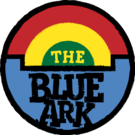
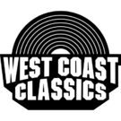

For those stuck in traffic, tune in to the Los Santos radio dial for a wide range of music styles to choose from. From the sound of the street on Radio Los Santos, Non Stop Pop FM's infectious tunes, FlyLo FMs cutting-edge dance music or the funk of Space 103.2, you won't want to sit still, even if you have been in traffic for hours.